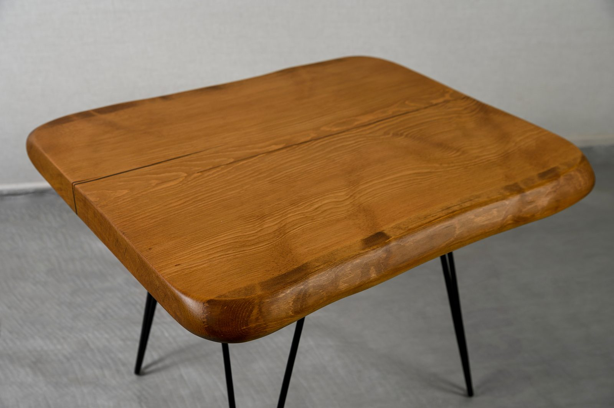
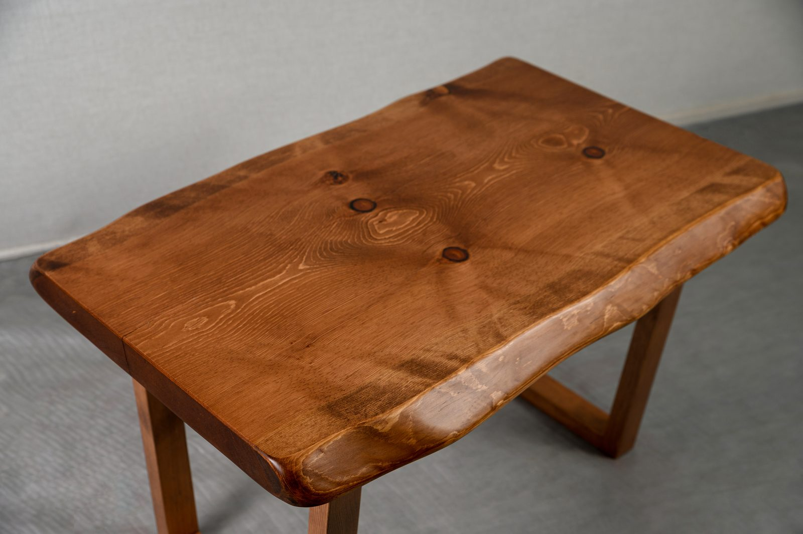

Журнальный стол из алтайского кедра S001, 700 × 500 мм
S001 · единственный экземпляр
Небольшой стол из цельного слэба кедра — у дивана, кресла или кровати. Живой край и рисунок годовых колец делают его единственным: второго такого не будет.
700 × 500 мм
толщина столешницы 48 мм
9 500 ₽
Оставить заявку на это изделие
Изготовление — от 7 до 21 дня.
Доставляем по всей России транспортными компаниями, в надёжной упаковке; условия и стоимость обсуждаем индивидуально.
Что вы получаете
Цельный слэб векового кедра
Доска распилена вдоль ствола дерева высотой от 30 метров. Живой край, сучки и изгибы сохранены.
Сушка и закалка
Два месяца сушки при 60 °C и восемь дней термомодификации паром под давлением при 180–240 °C — древесина крепкая, влагостойкая, стабильная в геометрии.
Ручная художественная обработка
Каждому фрагменту резчик придаёт индивидуальность вручную.
Polistuc и Votteler
Покрытия premium-класса — Polistuc (Италия) и Votteler (Германия): «живая» тактильная поверхность.
Этот стол — один
Рисунок годовых колец, сучки и изгибы этого дерева не повторятся ни в одном другом изделии. Если стол уже продан — подберём близкий по характеру слэб и изготовим похожий стол по вашим размерам.
Похожие изделия

S002
800 × 500 мм
толщина столешницы 48 мм
11 000 ₽Смотреть изделие →

S003
650 × 450 мм
толщина столешницы 48 мм
8 500 ₽Смотреть изделие →

S004
700 × 500 мм
толщина столешницы 48 мм
9 500 ₽Смотреть изделие →

S005
700 × 500 мм
толщина столешницы 48 мм
11 000 ₽Смотреть изделие →